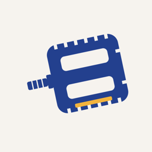

PedalsHelp and feedback
Questions, bugs or ideas: email pedals@kyuhunl.ee. Include your phone model and what you were doing. For a bug, please also attach the file from Settings → Save troubleshooting log; it never includes bike numbers, QR codes, links or notes. Please don’t send ride history you’d rather keep private.
Does Pedals unlock bikes?
No. Pedals keeps your journal. Your bike share app unlocks the bike and handles payment. Pedals can open that app for you after a scan (Settings → Scanning).
Where is my journal stored?
On your phone only. To move it to a new phone, use Settings → Your data → Export journal, then Import journal on the new phone. Deleting the app deletes the journal unless you exported it.
Why does a ride end on its own?
With “Finish rides automatically” on, Pedals checks the bike’s public page during a ride and finishes the log once the bike is docked again. Turn it off in Settings → Rides to finish rides yourself.
What are community ratings?
An optional pilot. If you turn on sharing, your star ratings and tags (never your notes) are shared anonymously, and once you’ve shared a few you can see other riders’ ratings for bikes. You can withdraw everything you shared from Settings at any time.
How do I delete my data?
Pedals has no account. Your journal is only on your phone: deleting the app deletes it. If you turned on community sharing:
- To delete your shared ratings, open Settings → Community ratings → Withdraw shared ratings. This removes every rating your phone shared from the server and stops sharing.
- Bike location reports aren’t stored with your ID or anything else about you, so there’s nothing to find and delete; they’re removed automatically within a week.
- If you already deleted the app, the ratings it shared stay anonymous: nothing links them to you, so they can’t be found to delete, and they stop counting toward scores after about a month. Withdraw before deleting the app to remove them. Questions: pedals@kyuhunl.ee.